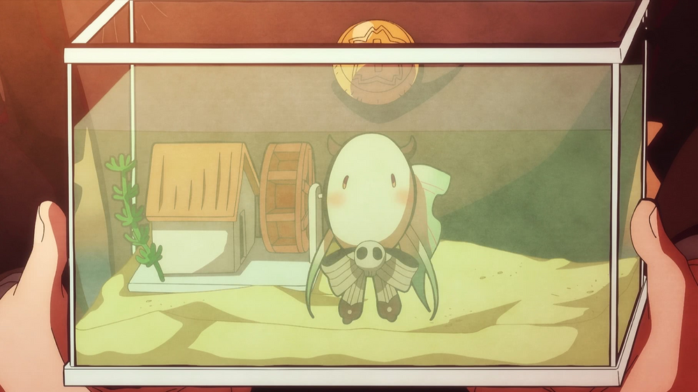
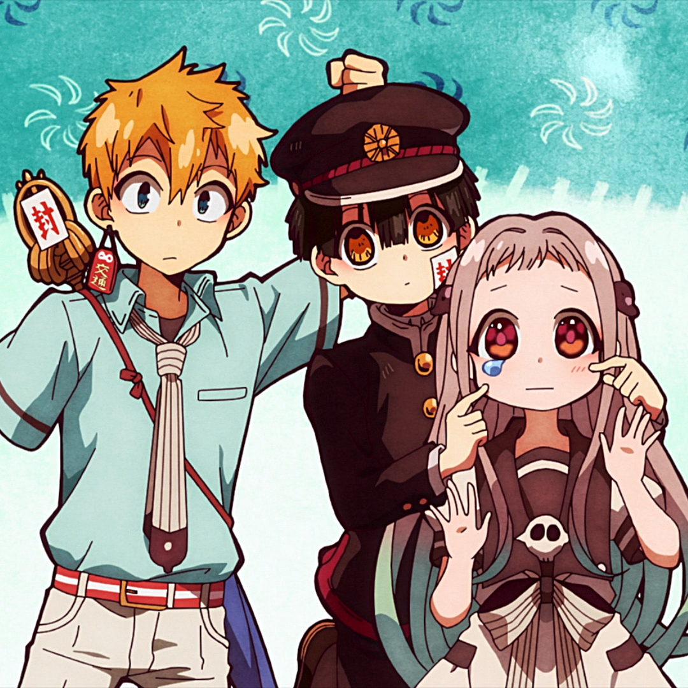

Yashiro Nene
Yashiro Nene é capaz de ver sobrenaturais, como Hanako, sem ter qualquer afiliação anterior com eles. Mais tarde no mangá,é revelado o porquê que ela pode ver os sobrenaturais.
Nene tem 15 anos, está no primeiro ano do ensino médio. Era uma humana normal, porém, depois de ingerir uma escama de sereia,a pele de Nene se transforma em escamas sempre que ela entra em contato com a água. Além disso, ela se transforma em um peixe se seu corpo estiver completamente submerso. Por estar ligada a Hanako por um contrato, ela é capaz de permanecer em sua forma humana fora da água. Ocasionalmente, suas escamas caem e podem ser usadas como uma moeda rara no mundo sobrenatural.
Nene é uma jovem garota com grandes olhos magenta com acentos laranja / amarelo. Seu cabelo na altura da cintura é de uma cor creme, e nas pontas um verde azulado e é estilizado com franja na testa. Ela usa dois acessórios de cabelo magatama marrom escuro na lateral de sua cabeça, o que puxa um pouco de seu cabelo para trás. Ocasionalmente, Nene usa outros estilos de cabelo, como tranças e rabos de cavalo.
Yashiro tem o apelido de rabanete, devido às suas pernas grossas que parecem rabanetes.O uniforme da escola de Nene consiste em um vestido de marinheiro de cor creme, que vai até os joelhos e tem uma bainha recortada. O forro da saia é magenta profundo, enquanto a gola, os punhos e os bolsos são todos marrons com detalhes em creme. O laço da gola é da mesma cor do vestido e inclui listras marrons; Nene também prende seu broche de caveira pessoal acima do arco.
Nene é uma garota muito extrovertida e sincera que parece querer muito a aprovação de seus colegas. Ela geralmente é gentil com os outros. E genuinamente deseja ajudar as pessoas ao seu redor e está até mesmo disposta a correr o risco de se associar com seres sobrenaturais para fazer isso.
Porém, Nenê também é bastante insegura, principalmente em relação aos tornozelos e se as pessoas gostam mesmo dela ou não. Além disso, a menina deseja intensamente um namorado, ela é uma romântica incurável que facilmente se apaixona por meninos charmosos, que a levaram a muitas experiências ruins e constrangedoras.